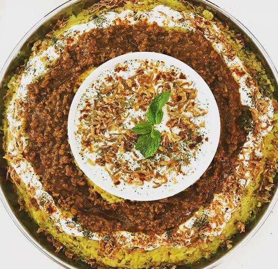

Customs and traditions in Afghanistan are a combination of different traditions,
cultures, and beliefs that have developed in the country over the centuries.
These customs are very important in the daily lives of the people of Afghanistan
and vary according to the different ethnicities and regions of the country.
Afghanistan, due to its location on the Silk Road, was a crossroads for major world civilizations and was one of
the most important trading centers in ancient times. This important and sensitive strategic and geopolitical position of
Afghanistan has played an important role in shaping a rich mosaic of cultures and civilizations from Iran, Central Asia,
the Middle East and South Asia in this country. Since ancient times and throughout historical periods, the people of Afghanistan have been
a major center for the introduction and propagation of world religions and have played an important role in trade and commerce,
and have been a dominant political and cultural center in Asia.
__Types of Afghan Food__
Afghanistan has delicious and diverse food, and every city in Afghanistan has its own famous and special food.
Qabili Polo
It is one of the most famous types of pilaf in Afghanistan, and almost all neighboring countries are familiar with its name. It is made from thin rice, kosht yakhni kosfand, zardak (carrot), raisins, and pistachio slices.

Kachari Qorut
It is one of the famous Afghan dishes that is mostly cooked in winter. On the first day of winter, people put a chair or stove and cook a Kachari qurot.
Ashk
It is a type of local food that is prepared using a paste of kandam and kandaneh (leer).
Manto
One of the delicious Afghan dishes that is steamed, Manto is also one of the most famous and favorite dishes of the people of Central Asia.

Types of stew:
Stews are usually a combination of vegetables, dried or fresh vegetables, and legumes such as chickpeas and beans. They are called qormeh and are usually served with bread or rice.
Qourma sabzi
It is made from red meat, onion, spinach, parsley, and beans.
Lung Stew
It is common in Herat and is made from red cabbage, onion, garlic, grated carrots, and Roman rub.
Shole Ghorbandi
The Ghorband district of Parwan province produces a special dish called "Ghorbandi Shola". This dish is made from rice, mung beans, sorghum, and kausht (a type of rice) called kaushfand.
Bolani
One of the famous Afghan dishes is to dip charred yam paste into yam or potato curd, place it in a pan in a semi-circle shape, and fry it in oil.